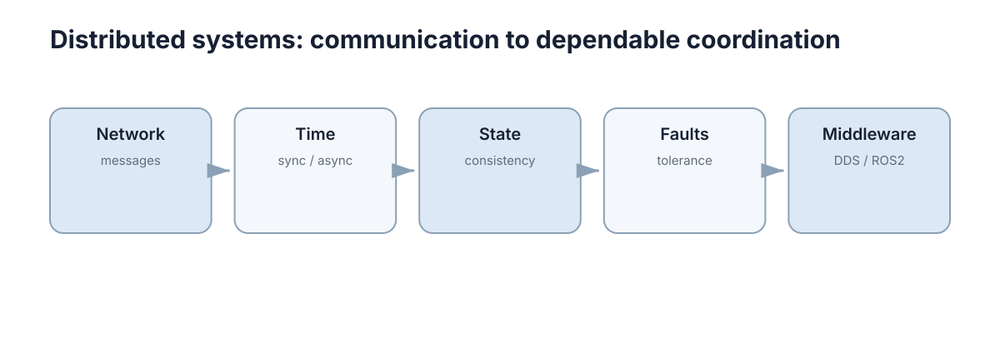

Distributed Systems
这一节解释多个计算节点如何通过网络交换消息、处理异步、维护状态并容忍故障，并以 ROS2/DDS 作为工程落点。

对机器人系统来说，分布式不是可选架构而是默认现实：感知、规划、控制常运行在不同进程甚至不同主机上，中间隔着网络与调度器。一旦有网络，就必然有延迟、乱序和分区，因此这一节的每一章都在回答同一个问题：在这些不完美条件下，系统如何仍然可预测。
本节要解决的问题
单机程序里“函数调用”是可靠的：同步、有返回值、不会丢。分布式系统打破的正是这些假设：
| 被打破的假设 | 现实情况 | 对应章节 |
|---|---|---|
| 调用会返回 | 可能超时，且无法区分慢与失败 | Networks & Message Passing |
| 时间全局一致 | 各节点时钟有偏差，顺序需额外信息 | Time & Asynchrony |
| 状态只有一个副本 | 多副本导致旧读、写冲突 | Consistency & Distributed State |
| 组件要么好要么坏 | 沉默失效、部分失效、恢复中的脏状态 | Fault Tolerance |
| 通信语义由程序决定 | 语义由中间件配置决定 | DDS & ROS2 |
| 一次发送对应一次接收 | 可能丢失、重复、乱序，或者根本没发出去 | Networks & Message Passing |
第一个要建立的反直觉认识是：分布式系统的失败很少是全有全无的。设单次端到端通信的成功概率为 \(1-p\)，一次业务流需要 \(n\) 次通信才能完成，则整段业务的成功率约为
例如 \(p=10^{-3}\) 时单次通信看起来足够可靠，但 \(n=1000\) 的业务流成功率只有约 0.37，也就是三次里失败接近两次。所以分布式系统的可靠性目标不能按“单次通信质量”来设，必须按“一段业务流的成功率”来设，这直接决定了哪里值得加冗余。
消息在网络里也不会只有“到达”和“丢失”两种结局，下面六类失败模式都必须被显式处理：
| 失败模式 | 触发条件 | 表面症状 | 常见误判 | 缓解手段 |
|---|---|---|---|---|
| 丢失 | 无线链路抖动、缓冲区溢出 | 偶发整帧缺失 | 传感器或算法故障 | 关键路径用可靠传输；纯状态流可容忍丢弃 |
| 重复 | 重传、多路径、多副本订阅 | 同一动作执行两次 | 状态机有并发 bug | 幂等键 + 去重窗口 |
| 乱序 | 多路径或多个 QoS 通道混合 | 旧数据覆盖新数据 | 存在数据竞态 | 携带序列号与时间戳，拒绝回退 |
| 延迟抖动 | 调度抢占、带宽争用 | 时快时慢的周期性卡顿 | 控制器参数不当 | 提高优先级、固定周期发布 |
| 分区 | 交换机故障、Wi-Fi 覆盖盲区 | 两个节点都认为对方已死 | 对端进程崩溃 | 心跳 + 分区检测 + 既定降级策略 |
| 静默失效 | 发布端存活但发送阻塞 | 话题存在却长期无数据 | 认为节点正常运行 | 与业务数据分离的端到端心跳 |
其中静默失效最难排查：所有健康检查都通过，唯一的证据是“数据没来”，而“没数据”在监控里往往与“系统空闲”长得一模一样。
时间语义的选择同样不是风格问题，它决定了哪些判断在原理上就不可能成立：
| 时间基准 | 定义 | 适合判断 | 不适合判断 | 代价 |
|---|---|---|---|---|
| 墙钟（wall clock） | 可对齐日历的时间，会被校时调整 | 跨主机日志对齐、记录绝对时刻 | 时间间隔测量 | 可能回退，破坏单调性 |
| 单调时钟（monotonic） | 只增不减，起点任意 | 超时、耗时、抖动 | 跨主机比较绝对时刻 | 各主机起点不可比 |
| 事件时间（event time） | 数据产生的时刻，由采集端打戳 | 传感器融合、多模态对齐 | 反映到达顺序 | 依赖时钟同步精度 |
| 处理时间（processing time） | 数据被处理的时刻 | 负载与吞吐监控 | 任何与因果相关的判断 | 被排队延迟污染 |
| 逻辑时钟（Lamport） | 计数式因果序 | 判断事件的因果先后 | 判断真实时间差 | 无法表达并发 |
| 向量时钟（vector clock） | 每节点一维的计数向量 | 检测并发写与冲突 | 大规模节点的元数据开销 | 元数据随节点数增长 |
可以先记一条选择规则：测量“过了多久”用单调时钟，描述“何时发生”用事件时间，判断“谁先谁后”用逻辑时钟。 混用这三类基准，是分布式 bug 最常见的来源之一。
五章的推进逻辑
| 章 | 主题 | 核心问题 | 关键输出 |
|---|---|---|---|
| 01 | 网络与消息传递 | 传什么、怎么传、丢失怎么办 | 传输选择与交付语义 |
| 02 | 时间与异步 | 如何判断事件先后 | 时钟选择与时间戳语义 |
| 03 | 一致性与分布式状态 | 多副本如何避免静默覆盖 | 版本号与冲突处理策略 |
| 04 | 故障与容错 | 超时、重试、冗余、降级 | 幂等设计与恢复目标 |
| 05 | DDS 与 ROS2 | 通信语义如何被配置 | QoS 策略与契约 |
顺序上有依赖：交付语义不清时讨论一致性没有基础；时间语义不清时故障判定会误报。
这种依赖不是组织上的方便，而是技术上的传递关系：上游没有定义的语义，最终会以下游症状的形式暴露出来。
| 缺失的上游语义 | 在下游表现出的症状 | 应当在何处修复 |
|---|---|---|
| 交付语义未定 | 一致性的讨论无法落地（不清楚“一次读”意味着什么） | 第 1 章传输选择 |
| 时间基准未统一 | 故障检测误报、估计器把新旧观测错配 | 第 2 章时钟选择 |
| 版本号缺失 | 旧数据静默覆盖新状态，行为“偶尔回退” | 第 3 章版本与冲突策略 |
| 幂等键缺失 | 一次重试把一次意图变成多次执行 | 第 4 章幂等与去重 |
| QoS 未逐项确认 | 话题存在但订阅端永远收不到数据 | 第 5 章 QoS 契约 |
这张表也是排查顺序的依据：当症状出现在第 3 章的层面时，先回头确认第 1、2 章的语义是否已经明确。 直接在第 3 章内部打补丁，通常只是把问题推迟到更晚、更贵的时候出现。
如果希望快速定位自己缺的是哪一章，可以按症状反查：消息偶尔收不到先看第 1、5 章，时间相关判断出错看第 2 章，状态偶尔变旧看第 3 章，故障处置靠临时决定看第 4 章。
概念地图
| 节点 | 含义 | 工程落点 |
|---|---|---|
| Network（messages） | 传输语义与消息契约 | TCP/UDP 选择、消息版本演进 |
| Time（sync / async） | 时钟、逻辑时间、超时基准 | 单调时钟、向量时钟、时间戳语义 |
| State（consistency） | 多副本可见性与冲突 | 版本号、会话保证、CRDT |
| Faults（tolerance） | 故障检测、隔离、恢复 | 幂等、退避、冗余、降级 |
| Middleware（DDS / ROS2） | 把上述语义固化为配置 | QoS 逐项选择与联调 |
顺着这五个节点走，会得到一条从“消息能否按语义送达”到“系统整体能否被信任”的链条。其中“一致性”最容易被口号化，因为一致性级别本质上是延迟与可预测性之间的定价：
| 一致性级别 | 保证 | 主要代价 | 机器人场景 |
|---|---|---|---|
| 线性一致 | 读立即看到最新写 | 需往返确认，分区下不可用 | 单点资源占用、模式切换 |
| 顺序一致 | 所有节点看到相同操作顺序 | 需全序广播 | 共享任务队列 |
| 因果一致 | 有因果关系的操作按序可见 | 需携带版本元数据 | 多机地图片段合并 |
| 会话一致 | 同一会话内自己的写可见 | 需粘性路由 | 交互界面读回自己的设置 |
| 最终一致 | 停止写入后副本收敛 | 存在陈旧读窗口 | 云端日志、非关键遥测 |
| CRDT | 并发更新可交换合并 | 需专门的合并结构 | 多机共享占用地格 |
任何一致性保证都要付出通信代价，其下界大致是
也就是说：要保证读到“最新的写”，至少要等一次网络往返再加最慢写路径。 机器人系统里大量其实不需要立即一致的状态（遥测、日志、历史轨迹）如果被误加上强一致要求，会直接吃掉控制回路的延迟预算。
“容错”这一类节点还需要一组可量化的目标，否则“更可靠”无法验收：
| 指标 | 定义 | 机器人系统典型目标 | 提升手段 |
|---|---|---|---|
| MTTF | 平均无故障时间 | 消费级硬件数百至数千小时 | 冗余、降额使用、散热 |
| MTTD | 平均故障检出时间 | 应为控制周期的 1–10 倍 | 心跳、端到端校验 |
| MTTR | 平均恢复时间 | 自动重启 <5 s；现场人工 10–30 min | 看门狗、自动重启、无状态设计 |
| 可用性 \(A\) | \(A=\mathrm{MTTF}/(\mathrm{MTTF}+\mathrm{MTTR})\) | 99.9% 约等于年停机 8.8 h | 缩短 MTTR 通常比提高 MTTF 便宜 |
| RTO | 允许的最长中断时间 | 控制回路常要求 <100 ms | 热备、快速切换 |
| RPO | 可容忍的数据丢失窗口 | 地图与标定 0；遥测可分钟级 | 持久化频率、双写 |
可观测性由比值决定，因此有一个不直观的结论：把 MTTR 从 60 min 压到 6 min，对可用性的改善往往大于把 MTTF 提高十倍，而前者通常只在软件层面就能做到。
与其他章节的接口
| 本节概念 | 对接章节 | 解决什么 |
|---|---|---|
| QoS 与通信语义 | Navigation & Control | 控制回路的延迟与丢包容忍度 |
| 时间同步 | Multi-Modal Perception | 多传感器时间对齐精度 |
| 交付保证与去重 | Communication & Information Sharing | 多机消息的重复与陈旧 |
| 容错与降级 | Fault Detection & Tolerance | 检测、隔离与安全退化 |
| 部署与健康检查 | Docker, CI & Reliability | 可观测性与回滚 |
| 接口契约 | Modular Design & APIs | 消息结构即 API |
这些接口的共同点是：本节提供“通信与协调的语义”，其它章节提供“使用这些语义的业务”。 当业务层出现偶发错误而算法本身正确时，接口契约常常才是真正的故障点。
本节的语义最终会以 QoS 配置的形式固化下来，所以选择矩阵本身就是接口的一部分：
| 数据类别 | 可靠性 | 队列深度 | 历史策略 | 截止时间取向 | 取舍理由 |
|---|---|---|---|---|---|
| 高频传感器流 | BEST_EFFORT | 1–5 | KEEP_LAST | 数十毫秒 | 宁可丢帧也要拿到最新 |
| 控制指令 | RELIABLE | 1 | KEEP_LAST | 1–2 个控制周期 | 不可丢，也不可堆积 |
| 状态与事件 | RELIABLE | 10–100 | KEEP_LAST | 宽松 | 允许排队但不可丢失 |
| 参数下发 | RELIABLE | 1 | KEEP_ALL | 一次性 | 必须到达且不重复 |
| 地图与点云 | RELIABLE | 1 | KEEP_LAST + transient_local | 宽松 | 后加入的订阅者也要拿到当前值 |
| 日志与诊断 | BEST_EFFORT | 大 | KEEP_LAST | 无 | 可丢弃，不与关键流争带宽 |
队列深度是这张表里最容易被忽视的一列：深度设得过大会把“实时数据”变成“历史回放”，订阅端看起来一直在满负荷处理，处理的却可能是几秒之前的旧帧。
机器人系统的典型延迟预算
分布式设计最终要落到一个总延迟预算上。以 10 Hz 控制回路为例，周期 \(T_{\text{ctrl}} = 1/f_{\text{ctrl}} = 100\ \mathrm{ms}\)，预算关系可以写成
其中 \(d_i\) 是第 \(i\) 个环节的延迟，\(J_{\max}\) 是最坏情况下的抖动。真正拖垮闭环的往往不是平均延迟而是抖动：平均 20 ms、抖动 ±40 ms 的链路，其效果接近平均 60 ms，因为个别周期会直接错过截止时间，而闭环性能由最坏周期决定。
| 环节 | 典型延迟 | 预算占比 | 可压缩方式 |
|---|---|---|---|
| 传感器采集与曝光 | 5–30 ms | 30% | 提高频率、减少滤波 |
| 传输与中间件 | 1–20 ms | 20% | 本地通信、调小 QoS depth |
| 融合与状态估计 | 5–20 ms | 20% | 降低状态维数、优化求解 |
| 规划 | 5–50 ms | 30% | 降频执行、热启动 |
| 执行器响应 | 10–100 ms | 超出周期 | 硬件限制，只能进入余量 |
当某一环节的延迟接近或超过控制周期时，闭环性能会迅速恶化——这与 Feedback & Stability 中“延迟消耗相位裕度”的结论是同一个现象。分布式系统的延迟问题最终以控制系统的稳定性问题呈现。
从这条预算关系可以推出两个实用要求：一是抖动与平均延迟必须分别设指标、分别观测；二是任何新增在主链路上的同步等待（例如一次强一致读）都要从这份预算里扣除，而不是默认系统还有余量。
抖动本身也有来源构成，不同来源的可预测性差别很大：
| 抖动来源 | 典型量级 | 可预测性 |
|---|---|---|
| 传感器采样相位 | ±半个采样周期 | 可预测，可用同步触发消除 |
| 网络排队 | 0.1–10 ms | 部分可预测，随负载变化 |
| 调度抢占 | 0.5–20 ms | 难预测，靠优先级与实时内核改善 |
| 内存分配 / GC | 1–100 ms | 难预测，靠预分配与池化消除 |
把抖动按来源拆分之后，压缩延迟预算才有明确目标：先消掉可预测的那部分相位差，再处理调度与内存造成的尾部延迟。
调试顺序
分布式故障的排查顺序很重要，因为症状往往出现在与根因不同的节点上：
| 顺序 | 检查项 | 常见结论 |
|---|---|---|
| 1 | 时间戳与时钟基准 | 时钟不同源导致数据看似“乱序” |
| 2 | 消息是否真的到达 | 主题名、QoS 不兼容、网络隔离 |
| 3 | 频率与抖动 | 调度或带宽不足，非算法问题 |
| 4 | 丢包与重传 | 无线链路质量或缓冲区过小 |
| 5 | 状态一致性 | 多副本覆盖、版本回退 |
| 6 | 逻辑与算法 | 前面都排除后才怀疑 |
每一步都应当配一个量化判据，否则“看起来正常”会掩盖真正的越界：
| 指标 | 健康范围 | 越界时的第一嫌疑 |
|---|---|---|
| 端到端延迟 | < 控制周期的 20%（10 Hz 时 <20 ms） | 带宽不足或调度抢占 |
| 抖动 | < 控制周期的 10% | 回调阻塞、频繁内存分配 |
| 丢包率 | 有线 <0.1%，Wi-Fi <1% | 链路质量或接收缓冲区过小 |
| 发布频率偏差 | ±5% 标称值以内 | 定时器被阻塞、计算超时 |
| 时钟偏移 | 同步生效后 <1 ms | NTP/PTP 未真正生效 |
| 订阅端队列占用 | 长期为 0 或 1 | 消费者过慢，或深度设置过大 |
先怀疑算法通常是最慢的路径：网络层面的问题在日志里表现为“结果偶尔不对”，很容易被误认为算法不稳定。
常见失败模式
| 现象 | 常见误判 | 实际原因 |
|---|---|---|
| 话题收不到数据 | 认为节点坏了 | QoS 不兼容或发现机制未建立 |
| 控制偶尔抖动 | 认为控制器参数问题 | 通信抖动引起的周期性延迟 |
| 多机时间戳错乱 | 认为传感器异常 | 时钟不同源、缺少同步 |
| 状态被旧数据覆盖 | 认为并发 bug | 缺少版本号或单调保证 |
| 重试后任务重复执行 | 认为网络不可靠 | 缺少幂等键与去重 |
| 分区后两边都继续工作 | 认为系统在正常容错 | 缺少分区检测与仲裁，形成双主 |
| 时钟回退触发批量超时 | 认为网络突然变差 | 用墙钟做超时基准 |
| 恢复瞬间出现请求风暴 | 认为负载异常 | 缺少指数退避与随机抖动 |
| 多机地图整体折叠 | 认为后端优化发散 | 错误闭环约束未被拒绝 |
| 遥测静默丢失且无告警 | 认为这份数据本来就不重要 | 缺少端到端心跳与交付计数 |
这些模式的共同点是：根因几乎都在语义层（时间、版本、幂等、QoS），而不在算法层。 这也是本节反复强调“先定义语义、再写逻辑”的原因。
其中“分区后两边都继续工作”与“时钟回退触发批量超时”两类最难定位：前者不会报错，只是两台机器各自维护一套状态；后者会让超时判定在同一瞬间集体触发，看起来像一次没有原因的雪崩。
针对这些模式的通用手段是把语义显式化：
- 超时用单调时钟而不是墙钟，避免校时造成的时间倒流；
- 业务消息携带幂等键与序列号，让重复与乱序在本地就能被检测；
- 关键状态带版本号，旧写被拒绝而不是静默覆盖；
- 分区期间谁降级、谁停机，在部署之前就写进约定。
这张表同时可以当作检查清单：如果某个失败模式找不到对应的缓解手段，它的处理目前就只能靠运气。
本章导航
建议按顺序阅读，因为每一章都在使用前一章定义好的概念；如果只有一天时间，优先读第 1、2、4 章，它们覆盖了绝大多数实机通信问题。
- 第 1 章 · 网络与消息传递：传输语义、消息契约与交付保证。
- 读法：先判断“丢了能不能接受”，再选可靠或尽力而为传输。
- 出口：能说清每条消息的交付语义与重试边界。
- 第 2 章 · 时间与异步：物理时钟、逻辑时钟、超时基准与时间戳语义。
- 读法：先分清“测量时长”和“描述时刻”各用哪种时钟。
- 出口：超时基准统一到单调时钟，跨机事件有可比较顺序。
- 第 3 章 · 一致性与分布式状态：可见性、版本号、会话保证与冲突处理。
- 读法：先问“这份状态真的需要强一致吗”，再谈代价。
- 出口：每份共享状态都有明确的可见性与冲突策略。
- 第 4 章 · 故障与容错：故障模型、幂等、退避、冗余与恢复目标。
- 读法：先定 MTTD 与 MTTR 目标，再决定冗余与降级手段。
- 出口：故障时的行为是设计出来的，而不是碰巧正确的。
- 第 5 章 · DDS 与 ROS2：把通信语义固化为可检查的 QoS 配置。
- 读法：按数据类别逐项确认可靠性、队列深度与历史策略。
- 出口：每条 QoS 配置都能解释“为什么是这样”。
下一步：从 Networks & Message Passing 开始，先建立“消息在网络中会经历什么”的直觉，再进入时间与一致性。多机场景下的消息重复与陈旧问题见 Allocation & Distributed Decision。